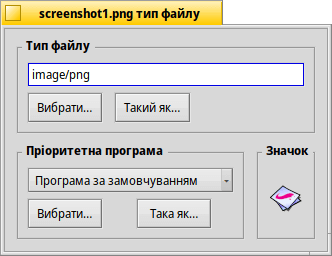
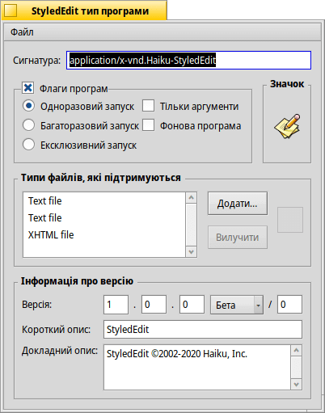

Типи файлів (Filetypes)
На відміну від Windows, при визначенні типу файлу Haiku не спирається на розширення типу файлу з 3-х літер (наприклад, .txt, .jpg, .mp3). Цей метод є лише крайнім заходом. Haiku використовує типи MIME, як це прийнято в мережі Інтернет.
 Встановлення типу файлу для конкретного файлу
Встановлення типу файлу для конкретного файлу
Ви можете змінити тип певного файлу, його значок та пов'язану (асоційовану) з ним програму. Виберіть файл і викличте у контекстному меню, що відкривається правою кнопкою миші.

Тип файлу
Вище Ви бачите інформацію про PNG-файл, його MIME-тип – image/png. Припустимо, Ви точно знаєте, що це не PNG, а GIF. Ви можете змінити це, ввівши правильний MIME-тип вручну або за допомогою однієї з двох кнопок під текстовим полем:
| показує ієрархічний список типів файлів, в якому Ви можете вибрати image | GIF Image. | ||
| відкриває діалогове вікно, в якому Ви можете вибрати будь-який файл, що вже має потрібний Вам тип. |
Пріоритетна програма
У цьому списку, який розкривається, показано усі програми, які можуть обробляти цей конкретний тип файлу. Тут Ви можете вибрати, яка програма має відкрити цей конкретний файл після подвійного кліку миші. Наприклад, Ви можете змінити пріоритетну програму для файлу HTML з браузера на текстовий редактор, під час роботи з цим файлом. Усі інші HTML-файли все ще відкриватимуться у браузері, лише цей відкриється у Вашому текстовому редакторі.
– це програма, яка встановлена глобально для цього типу файлів. Якщо у списку Ви не знайдете програму, яка буде відкривати цей файл, Ви знайдете її за допомогою кнопок і , які виконують аналогічну дію, описану вище для секції «Тип файлу».
Значок
У цьому полі відображається значок, який належить файлу. Зазвичай, за замовчуванням використовуються системні значки для цього типу файлів. Ви можете відкрити Filetype для файлу в якого вже є значок і перетягнути його у поле значка Вашого файлу. Або зробити подвійний клік по значку та створити чи відредагувати власний значок у редакторі. Для отримання додаткової інформації про значки та про те, як створювати власні, дивіться тему Icon-O-Matic.
Спеціальні настройки для програм
Якщо Ви викликаєте Filetype для файлу програми (наприклад, StyledEdit), Ви побачите інше діалогове вікно:
Зверху, замість стандартного типу MIME Ви побачите унікальний підпис програми – сигнатуру. По сигнатурі система знаходить програму, де б вона не була встановлена.
Нижче є декілька опцій, які контролюють поведінку програми:
| Один виконуваний файл може запускати лише один екземпляр програми. Однак, якщо у Вас є дві копії програми, вони можуть запускатися одночасно. | ||
| Багато екземплярів програми можуть працювати одночасно. | ||
| Насправді, одночасно може бути запущений лише один екземпляр з сигнатурою цієї програми. | ||
| Вказує, що програма не відповідає на повідомлення. | ||
| Програма не відображатиметься в Twitcher або у списку запущених програм на панелі задач Deskbar. |
Далі йде список підтримуваних типів файлів. Ви можете додавати (і видаляти) типи файлів, якщо вважаєте, що програма може їх обробляти. Як наслідок, програма з'явиться у меню пріоритетних програм або у контекстному меню Tracker, коли Ви зробите правий клік миші на файлі такого типу.
Унизу наведено інформацію про версію програми та авторські права. Як і сигнатура програми, вони заповнюються автором програми і не повинні бути змінені.
Глобальні настройки через параметри FileTypes
Параметри FileTypes стосуються не окремих файлів, а глобальних параметрів типів файлів у системі. Ви можете змінити значки за замовчуванням і пріоритетні програми або додати, видалити чи змінити атрибути цілих типів файлів. Ви навіть можете створити свій власний тип файлу з нуля.
Усі типи файлів та їхні конфігурації зберігаються у /boot/home/config/settings/mime_d/. Перш ніж почати експериментувати, доцільно створити резервну копію цього каталогу…
Щоб дізнатися більше про параметри FileTypes перегляньте майстер-клас: Типи файлів, Атрибути, Індекси та Запити.